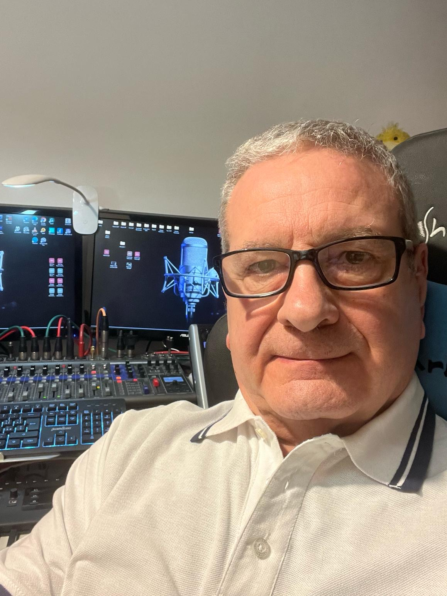
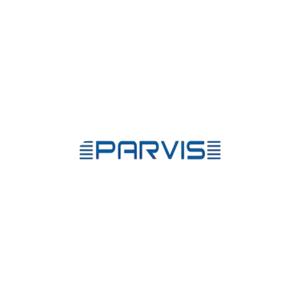

Discografia
I nostri progetti discografici


Where Sound Meets Vision
Uno studio di consulenza e produzione musicale, una struttura professionale orientata alla crescita, alla creazione e alla valorizzazione di progetti sonori.
Fornisce supporto artistico, tecnico e strategico a musicisti, band e aziende, seguendoli dall'ideazione fino alla finalizzazione del lavoro.
Grazie a competenze consolidate, tecnologie avanzate e un metodo su misura, lo studio trasforma le intuizioni in contenuti musicali di qualità, pronti per la diffusione e la comunicazione.
Fondatore & Producer

Sound Engineer & Producer
INCD STUDIO nasce nel 2013 da un'idea di Luca Maggioni: creare uno studio di produzione musicale capace di unire qualità sonora, competenza professionale e una forte identità artistica. Fin dall'inizio, l'obiettivo è chiaro: offrire un punto di riferimento affidabile per chi cerca un suono curato, autentico e riconoscibile.
Nel 2023 Danilo Radice entra a far parte del progetto, contribuendo a un'evoluzione naturale dello studio. L'incontro tra esperienze diverse rafforza il brand e amplia l'offerta di servizi, permettendo a INCD STUDIO di affrontare produzioni sempre più complete e trasversali.
Oggi INCD STUDIO è una realtà strutturata che mette a disposizione di artisti, band e professionisti oltre 40 anni di esperienza complessiva. Innovazione, cura del dettaglio e coerenza sonora definiscono il nostro modo di lavorare, trasformando ogni progetto in un'esperienza professionale allineata agli standard del mercato contemporaneo.
La produzione musicale in uno studio professionale è l'insieme di attività creative e tecniche che trasformano un'idea musicale in un brano finito...
Leggi tuttoLe colonne sonore nascono per accompagnare e valorizzare immagini, storie ed esperienze. Attraverso la composizione e la produzione su misura...
Leggi tuttoLa registrazione in studio avviene in un ambiente controllato e acusticamente trattato, che consente la massima cura del suono...
Leggi tuttoIl service audio per eventi live è l'insieme dei servizi tecnici e professionali dedicati alla gestione del suono durante concerti...
Leggi tuttoLa produzione discografica è il processo completo che porta alla realizzazione e alla diffusione di un progetto musicale...
Leggi tuttoLa consulenza musicale in uno studio professionale offre supporto creativo, tecnico e strategico a musicisti e aziende...
Leggi tuttoTecnologia professionale per garantire i massimi standard qualitativi
Neumann U87, TLM 103, SCHOEPS, Shure, AKG, Sennheiser...
Leggi tuttoBehringer X32, Zoom Livetrack, Studer A812, Nagra, Apogee...
Leggi tuttoLogic XI, Cubase, Ableton Live, Studio One, DaVinci Resolve...
Leggi tuttoGenelec 8250, KRK VXT 8, Bose F1 812, Turbosound...
Leggi tuttoPianoforte Petrov, Yamaha S90ES, Batterie Yamaha e Tama...
Leggi tuttoYamaha QL5, DM3, DM7, PA FBT Array Mitus, fino a 50.000W...
Leggi tuttoI nostri progetti discografici
